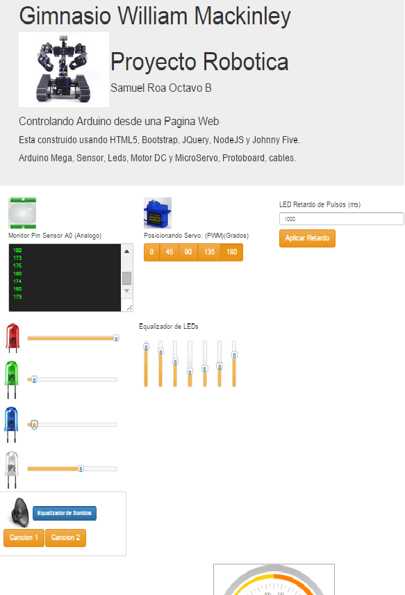
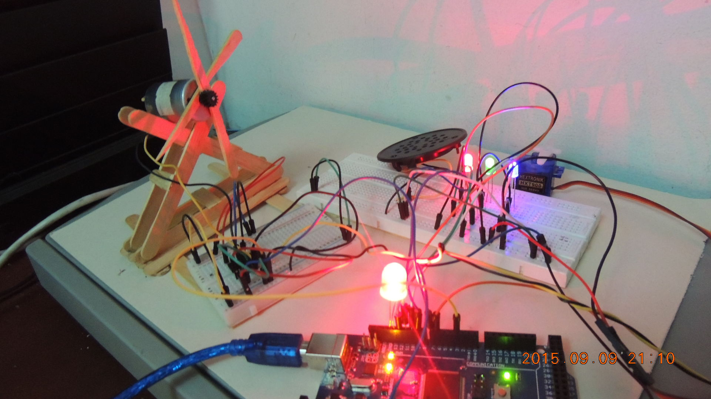
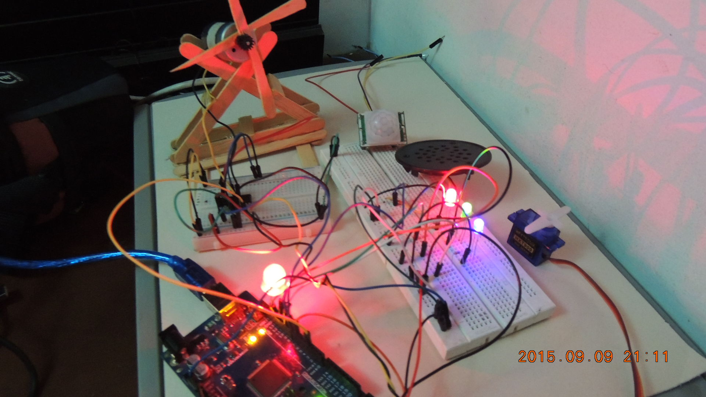
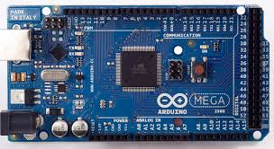
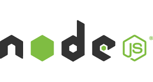
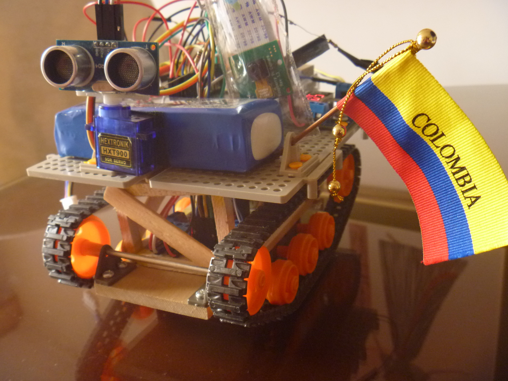
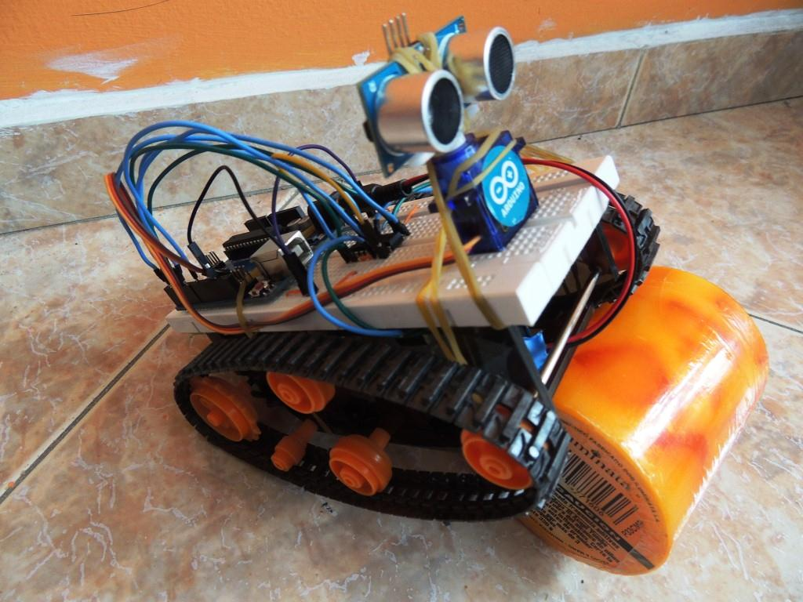

Controlando Arduino desde una Pagina Web
Diseño de la Aplicacion
Por lo general Arduino se programa con Sketchs, que se escribe con C++ con algun editor como IDE de Arduino, y este algoritmo se transfiere al PROM de la tarjeta Arduino, para que esta la ejecute internamente.
El presente Proyecto, no se programa de la forma tradicional
Sino que se escriben dos programas, uno para que se ejecute atras, de tal forma que el Usuario final no ve. Y otro que esta hacia el frente del Usuario.
- El Frontend es la parte que visualiza el Usuario, esta en HTML5, CSS y JavaScript.
- En el Backend, esta ejecutandose un codigo en Javascript, sobre NodeJS, el cual monta un servidor Web en el puerto 80, que controla la Arduino, y asincronicamente, esta comunicandose con la Pagina Web, a traves de Sockets, recibiendo las peticiones enviadas desde la pagina.
Elementos en la Pagina Web
Se usan etiquetas de diversos tipos, como Botones, Sliders, Cajas de texto, Cajas de area, y algunos widgets, que hacen amigable la interfaz de la aplicacion web
Ademas se pueden utilizar graficos, para mostrar de datos recolectados, por ejemplo en el caso de sensores.
Slider
Boton
Pagina Web (FrontEnd)
Fotos del Proyecto en Construccion



Que son estas tecnologias?
|  | Arduino es una tarjeta electronica, con licencia libre, que permite desarrollar proyectos de una forma amigable, dispone de procesador logico, pines digitales, analogos, de comunicacion, puerto de Red y USB. Se puede programar, en lenguajes como C++, Python, Javascript o Scratch. |
Es el lenguaje de Hipertexto mas popular para paginas web, se utilizan etiquetas |
|
Bootstrap es un CSS (Cascading Style Sheets), permite aplicar diseños y estilos a la pagina. |
|
JQuery es una biblioteca de JavaScript, creada inicialmente por John Resig, que permite simplificar la manera de interactuar con los documentos HTML, manipular el árbol DOM, manejar eventos, desarrollar animaciones y agregar interacción con la técnica AJAX a páginas web. Pero ademas permite desarrollar programas asincronicos y controlar robots. |
|
|  | NodeJS es una plataforma o servicio basado en Google Chrome Runtime, que ejecuta codigo escrito en JavaScript |
 | Johnny Five es una Libreria en JavaScript escrita para NodeJS, que permite la programacion de Controladores como Arduino, Rasperry Pi y BeagleBone. |
En que se pueden utilizar?
El proyecto que se pretende mostrar, es una aplicacion basica de electronica y programacion, usando tecnologias web y una tarjeta Arduino Mega.
Es dificil mencionar la gran cantidad de usos, en que podemos utilizar y beneficiarnos.
Solo por mencionar, por ejemplo en el colegio, se podria.
Armar un proyecto, que usando una camara o sensor de vision, (kinect), haga reconocimiento facial de cada estudiante que ingrese, y de acuerdo al horario, pueda inatendidamente, registrar a los que lleguen tarde.La aplicabilidad en realidad es inmensa tanto como el universo y la imaginacion de cada uno de nosotros.
Viendo a las actuales generaciones de estudiantes, es importante, dar a conocer estos temas cientificos, para que las estudien, ya sea desde casa, y que bueno seria desde el Colegio.
Robot AutoControlado con Raspberry PI
Robot a control remoto con Arduino
Que podemos aprender?
- Conocer estupendas herramientas libres que se usan en estos proyectos
- Diseñar modelos electronicos y mecanicos
- Aprender diversos lenguajes, que cada vez son mas sencillos, para programar
- Aprender del mundo de la Electronica
- Saber que no podemos conformarnos
- Que toda esta informacion esta en Internet
- A reciclar y reutilizar